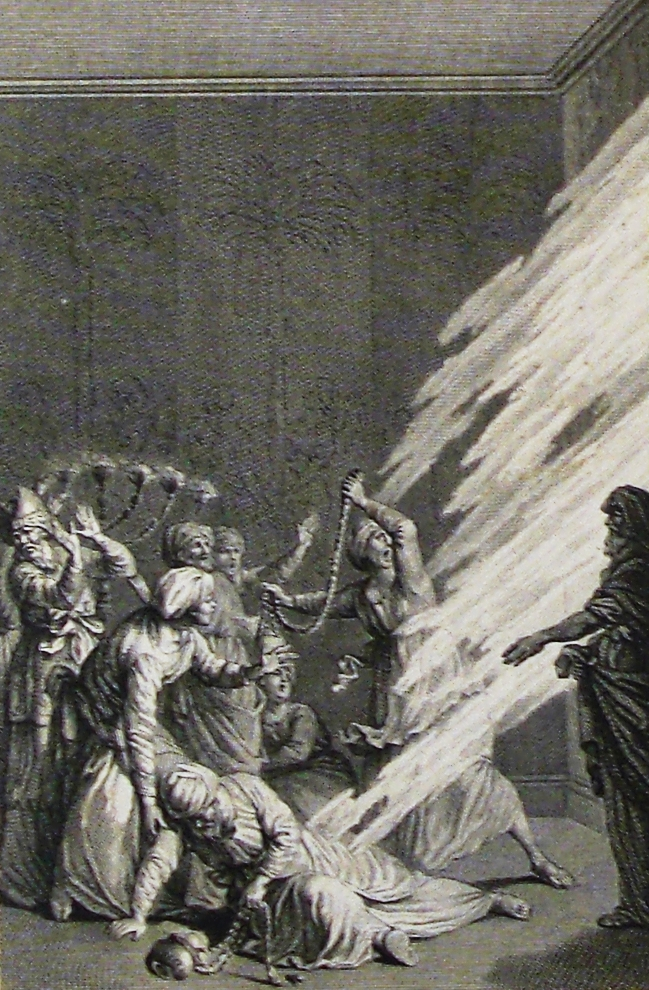

Levítico 10 — La Traducción Mister

El momento mismo de los vv1–2: el fuego que cae en el instante en que se ofrece el fuego extraño, una figura sacerdotal que ya cae con su incensario desprendido, la otra todavía tambaleándose —un grabado según Clément-Pierre Marillier (1740–1808), una de las 252 ilustraciones que hizo para una edición ilustrada de la Sainte Bible (la traducción francesa de Lemaistre de Sacy) publicada en París hacia el cambio del siglo XIX, conservada hoy en la Colección Phillip Medhurst. A diferencia de la escena amplia y llena de multitud que usa el arte propio de Levítico 9 (ya en estas páginas) para la celebración un capítulo antes, Marillier enmarca este momento de cerca y ajustado —la menorah apenas visible detrás de ellos es la única pista de que esto siquiera está sucediendo dentro del santuario, que es exactamente cuán rápido y cuán privadamente dice el texto que sucedió.
{kind=link}
El mismo fuego, el resultado opuesto
El capítulo que comienza en triunfo termina, en solo dos versículos, en catástrofe —y el hebreo hace audible la reversión, no solo narrada. «Salió fuego de delante de Jehová, y consumió» (v2) es la cláusula idéntica, palabra por palabra, que cerró Levítico 9:24 (ya en estas páginas), donde consumió la OFRENDA sobre el altar mientras todo el campamento gritaba de júbilo. Aquí consume a NADAB Y ABIÚ mismos, y nadie grita nada. El mismo fuego, la misma fuente, el mismo verbo —lo único que ha cambiado es lo que está donde antes estaba la ofrenda.
⚠ «Extraño» traduce zarah —ajeno, no autorizado, que no pertenece— el adjetivo idéntico que Éxodo 30:9 (ya en estas páginas) usó para prohibir cualquier incienso que no fuera la única receta prescrita sobre el altar del incienso: «no ofreceréis sobre él incienso extraño». Ese versículo anterior no nombra ningún castigo por romperlo; este ES el castigo. El texto es notablemente cuidadoso sobre lo que no dice: nunca especifica si el fuego fue tomado de una fuente no autorizada, si la receta del incienso era incorrecta, o si el momento era incorrecto —solo que Jehová «no se lo había mandado». La prohibición que sigue casi de inmediato (v9, vino y bebida fuerte antes de entrar en el tabernáculo) ha invitado durante mucho tiempo a los lectores a llenar ese vacío con la embriaguez; el texto mismo nunca hace la conexión explícita.
Santificado, glorificado, silencioso
Moisés responde a las muertes con una cita, no con un consuelo —y la cita está construida sobre la raíz exacta que acaba de aparecer ante sus ojos. «Delante de todo el pueblo seré glorificado» usa la misma raíz, kavod, que la gloria que había aparecido a toda la congregación un capítulo antes (Levítico 9:23, ya en estas páginas) —la palabra para el peso visible de la presencia de Jehová es ahora la palabra para lo que su propia cercanía exige. Ambos verbos, «seré santificado» y «seré glorificado», son pasivos en el hebreo (el nifal gramatical): no Jehová actuando para mostrarse a sí mismo, sino algo que simplemente sucede a través de quienes están más cerca de él —lo pretendan o no.
⚠ Toda la respuesta registrada de Aarón es una sola palabra: «vayidom», y calló. Ninguna protesta, ninguna pregunta, ningún duelo expresado en voz alta —el silencio más crudo de toda la Torá. La misma raíz reaparece, generaciones después, como consejo formal sobre cómo soportar una aflicción que Dios mismo ha impuesto a una persona: «siéntese solo y calle, porque es Dios quien se lo impuso» (Lamentaciones 3:28, ya en estas páginas) —lo que aquí es la reacción sin palabras de un padre ante la muerte de sus hijos, se convierte, en el exilio, en instrucción deliberada.
Parientes, no hermanos —y el trabajo que Aarón no puede hacer
«Vuestros hermanos» (v4) es el sentido llano del hebreo, pero los dos hombres que Moisés llama son en realidad primos hermanos, no hermanos de sangre. Misael y Elzafán son hijos de Uziel, quien es tío de Aarón —nietos, junto con Aarón, de un abuelo común. El hebreo bíblico extiende regularmente «hermano» para cubrir a cualquier pariente cercano, no solo a un hermano literal, y esta traducción conserva la palabra más amplia y llana en lugar de sustituirla por el más estrecho «primos», que el texto mismo nunca especifica.
Los dos hombres que SÍ son los hermanos literales de los muertos —Eleazar e Itamar, los hijos sobrevivientes de Aarón— no tocan los cuerpos en absoluto. Son sus parientes más lejanos quienes llevan a Nadab y Abiú fuera, «aún vestidos con sus túnicas» (v5), y la lógica misma del capítulo deja claro por qué: tres versículos después, Moisés prohíbe a Aarón, Eleazar e Itamar salir siquiera de la entrada del tabernáculo de reunión, «para que no muráis» (v7) —una restricción que haría imposible que ellos mismos llevaran cuerpos fuera del campamento. El silencio de Aarón en el versículo anterior no es solo duelo contenido; es un hombre atado a la puerta, incapaz de realizar la única tarea que los parientes más cercanos habrían hecho normalmente por los suyos.
Dos lugares para comer, y la regla sobre la que gira la próxima disputa
Después de once versículos de muerte e instrucción, el texto se vuelve casi sorprendentemente ordinario: quién come qué, y dónde. La ofrenda de grano sobrante (v12–13) es solo para sacerdotes, comida sin levadura, específicamente «en un lugar santo» —junto al altar mismo. El pecho mecido y el muslo contribuido de las ofrendas de paz (v14–15) son una concesión más amplia: no solo los sacerdotes sino sus HIJOS E HIJAS pueden comerlos, y solo «en un lugar limpio» —un estándar más bajo que «santo». Dos porciones, dos niveles de santidad, dos círculos distintos autorizados a comer.
Esa distinción no es incidental. Es la regla exacta que Moisés acusará a Eleazar e Itamar de romper cuatro versículos después: la ofrenda por el pecado, dice él, debía comerse específicamente «en el lugar santo» (v17) —la más estricta de las dos categorías recién definidas aquí, no el más permisivo «lugar limpio» del v14. «Porque así me ha sido mandado» (v13) es en sí misma una referencia retroactiva: la fórmula idéntica de cumplimiento que cierra instrucción tras instrucción a lo largo de Levítico 8 y 9, repetida una vez más antes de la única disputa en toda la narración de la ordenación donde el cumplimiento está realmente en cuestión.
Dos clases de duelo, y una rara palabra directa solo a Aarón
A los sacerdotes en funciones se les prohíben las marcas ordinarias del duelo —cabello suelto, vestiduras rasgadas— mientras que a todos los demás se les permiten explícitamente. «Vuestros hermanos, toda la casa de Israel, podrán llorar por aquellos a quienes el fuego de Jehová ha quemado» (v6) traza una línea dura: la nación llora a Nadab y Abiú; el sacerdocio, todavía en medio de la ordenación y todavía con el aceite de la unción, no puede hacerlo. El duelo en sí no es el problema —sus marcas rituales externas sí lo son, en hombres cuyos cuerpos son, por el momento, propiedad sagrada.
⚠ El versículo 8 es fácil de pasar por alto, pero marca algo inusual: Jehová habla directamente a Aarón, sin mencionar a Moisés en absoluto. Casi todas las instrucciones de Levítico hasta ahora han llegado «a Moisés, diciendo», incluso cuando el contenido concierne específicamente a Aarón. Aquí, una de las pocas veces en todo el libro, Aarón recibe la palabra él mismo —y lo que recibe es una prohibición de vino y bebida fuerte antes de entrar en el tabernáculo de reunión (v9), seguida de inmediato por la razón: para que el sacerdocio pueda distinguir lo santo de lo común, lo impuro de lo puro, y enseñar lo mismo a Israel (v10–11). El verbo es el idéntico sobre el que corrió la creación misma —el primer acto de Dios fue separar la luz de las tinieblas (Génesis 1:4, ya en estas páginas)— ahora entregado a un sacerdocio mortal como su disciplina diaria, en el mismísimo día en que ese sacerdocio acaba de mostrar, catastróficamente, cuán fácilmente se puede pasar por alto la línea.
El padre que calló finalmente habla
«Investigó cuidadosamente» (v16) traduce una construcción hebrea duplicada —darosh darash, el infinitivo absoluto apilado sobre su propio verbo finito, un intensificador estándar que esta traducción ha señalado en otros lugares como la forma propia del hebreo de subrayar un verbo. Darash es la palabra ordinaria para consultar un oráculo o buscar a Jehová (compárese 2 Reyes 1:2, ya en estas páginas); aquí su objeto es mucho más mundano —un macho cabrío desaparecido— pero la intensidad es la misma, y encuentra un problema real: la ofrenda por el pecado que debía haber sido comida por los sacerdotes había sido quemada en su lugar. Moisés está enojado, y los hombres a quienes confronta no son Aarón sino Eleazar e Itamar, sus dos hijos sobrevivientes.
Es Aarón quien responde. Este es el verdadero giro del capítulo: el hombre que no tuvo nada que decir cuando murieron sus hijos (v3) habla ahora, en defensa de ellos, sin que se lo pidan. Su argumento no es procesal sino personal —«cosas como estas me han sucedido» (v19), una forma escueta, casi evasiva, de nombrar las muertes sin describirlas— y su pregunta hace eco de la misma frase que Moisés acababa de usar para explicar la tragedia: ¿habría sido «bueno a los ojos de Jehová» comer hoy una comida festiva sacerdotal? ⚠ Moisés lo oye, y el capítulo cierra devolviéndole a Aarón sus propias palabras: «le pareció bien» (v20) —la frase idéntica que Aarón acababa de usar, ahora describiendo el veredicto de Moisés. El capítulo que comenzó con la muerte de un hijo silenciando a un padre termina con el argumento de ese mismo padre silenciando, a su vez, al aplicador de la ley. No sigue ningún castigo. Ninguna pausa de párrafo separa este intercambio del capítulo siguiente —el trabajo ordinario del sacerdocio simplemente continúa.
Notas sobre esta traducción
Decisiones. El hebreo y el español de Levítico 10 corren ambos 1–20 —sin división de versificación. Tres pausas de párrafo masoréticas dividen el capítulo (después de v7, v11 y v20), marcando tres movimientos distintos: las muertes y su secuela inmediata (1–7), las instrucciones de Jehová mismo a Aarón a solas (8–11), y las reglas de la ofrenda de grano que terminan en la disputa de la ofrenda por el pecado (12–20). «Extraño» se conserva para zarah (v1) en lugar de un equivalente moderno más llano como «no autorizado», específicamente para preservar la palabra idéntica ya usada en Éxodo 30:9 (ya en estas páginas) —el mismo adjetivo, plantado como una regulación ordinaria, pagado aquí como la transgresión que mata a dos hombres.
Ecos pagados. La cláusula idéntica «salió fuego de delante de Jehová, y consumió» que cierra la celebración de Levítico 9:24 y abre la catástrofe de este capítulo; el incienso «extraño» prohibido en Éxodo 30:9, ahora nombrando el fuego que mata a Nadab y Abiú; y la raíz badal, «separar», que lleva el primer verbo de la creación (Génesis 1:4) hasta el encargo diario del sacerdocio.
Ecos plantados. El silencio de Aarón (vayidom, v3), sin respuesta de nuevo hasta que Lamentaciones 3:28 convierte la palabra idéntica en consejo formal para soportar lo que Dios ha impuesto; y las muertes mismas de Nadab y Abiú, que la Torá aún no ha terminado de citar —Números vuelve a ellas dos veces más, ninguno de esos capítulos todavía en estas páginas.
⚠ Nota sobre el orden: Levítico está en estas páginas en los capítulos 1, 2, 3, 4, 5, 6, 7, 8, 9, 10, 11, 12, 13, 14, y 19 —aunque Levítico 1 (todavía no en estas páginas en español) sigue existiendo solo en la edición en inglés de este proyecto. Quedan abiertos los capítulos 15–18 y 20–27.